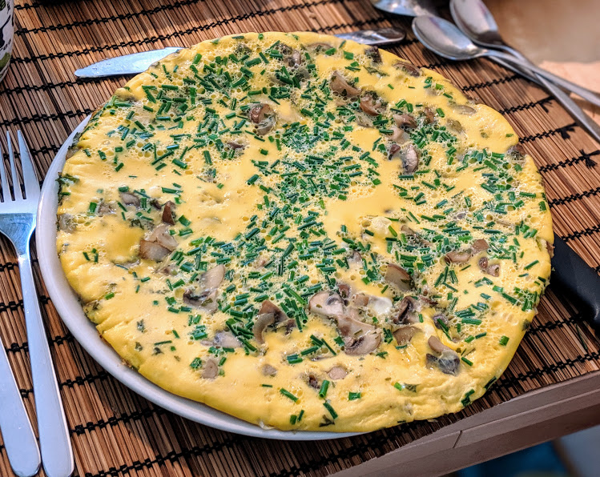

Omelette aux champignons

Pour deux personnes :
- Cinq œufs
- Un nuage de lait ou de crème
- Une poignée de champignons
- (Facultatif) Une douzaine de tiges de ciboulette
- (Facultatif) Une échalote
- Une noix de beurre
- Une cuillère à soupe d'herbes de Provence
- Une cuillère à café de noix de muscade
- Sel, poivre
- Éplucher et émincer l'échalote, la faire revenir dans une poêle, dans du beurre, à feu moyen.
- Laver et couper les champignons en gros bouts, les ajouter dans la poêle.
- Casser les œufs dans un bol, ajouter le lait (ou la crème), saler, poivrer, ajouter les herbes de Provence et la noix de muscade. Battre jusqu'à ce que ça soit homogène.
- Lorsque les champignons ont l'air cuits, rajouter les œufs. Faire cuire à couvert au début, puis lorsque ça a l'air d'être cuit jusqu'à environ la moitié de l'épaisseur des œufs, couvrir pour quelques minutes pour que ça gonfle.
- Pendant ce temps, laver et couper la ciboulette en petits morceaux, et l'ajouter sur le dessus lorsque c'est encore un peu liquide.
- Sortir l'omelette lorsqu'il ne reste plus qu'un peu de liquide (ou bien lorsque tout est solide si t'aimes pas les omelettes un peu baveuses). Déguster immédiatement, avec une salade.
Remarque : la même recette fonctionne avec n'importe quoi d'autre dans l'omelette ; il suffit de remplacer les étapes 1 et 2 par "faire cuire une autre garniture dans la poêle". Oignons, poivrons, lardons (dans ce cas, enlever le gras fondu avant de rajouter les œufs, et ne pas trop saler), patates sautées… C'est un peu la liberté totale.